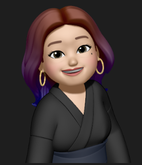

I build products that work for people — starting from research, shaped by data, and delivered with cross-functional teams.

Associate Product Manager, based in Jakarta.
I got into product management because I care about the gap between how things are built and how people actually use them. That curiosity started in design, grew through user research, and now drives the way I approach every product decision.
In the past year, I've shipped 6 features end-to-end — including an authentication flow that cut operational costs by IDR 100M+, and a product expansion into Malaysia while continuing to actively develop and ship for the Indonesian market. I've also built analytics infrastructure from scratch and run the stakeholder reporting that keeps leadership and marketing aligned.
Outside of product, I believe the best PMs are curious about people first. I still conduct user research, still read design critique, and still think the most important question in any room is: who are we actually building this for?
Cumlaude graduate of Digital Business at Universitas Padjadjaran (GPA 3.90). Open to PM roles across Southeast Asia.
I start with "what problem are we solving?" — not "what should we ship next?"
From user interviews to heuristic evaluation — I bring the user's voice into every sprint.
Built analytics systems from scratch. Comfortable with Mixpanel, SQL, and Firebase.
Comfortable leading delivery across Engineering, Design, Marketing, and Business.
Former UI/UX designer — I speak both PM and designer, and prototype when needed.
A quick look — see my CV for the full picture.
Owning end-to-end feature delivery, leading product expansion into Malaysia, and building the analytics infrastructure that helps the whole team make faster, cleaner decisions.
Wrote PRDs, ran competitor research across Southeast Asia, delivered UX writing across 20+ sprints, and built prototypes that accelerated sign-off between product and engineering.
Designed UI for two live digital platforms, built design system components, and ran UX research including heuristic evaluation and competitive benchmarking.
Post-launch monitoring for a gov-integrated product
After months of a complex government integration, the product went live with no visibility into whether it was performing. I identified the gap, wrote a structured monitoring brief, and directed the data team to build a dashboard covering adoption, reliability, and conversion.
Mixpanel event cleanup + bi-weekly stakeholder dashboard
While trying to build a dashboard, I noticed the underlying event data was unreliable. I audited 200+ events, standardized the naming system, deprecated the noise, and rebuilt the reporting layer that marketing and leadership now depend on.
A feature concept I built independently for Bank Jago
Identified a real pain point in how Gen Z splits group expenses, and built a full product concept in response — personas, MVP scope, user flows, technical requirements, and a press release.
Task management app for students & young professionals
End-to-end product design — from user research and problem framing through to a high-fidelity prototype ready for handoff.
Connecting local tailors with customers
Designed a two-sided marketplace for an underserved niche — covering personas, journey maps, and a go-to-market strategy built on real user gaps.
Safe space for meaningful friendship & peer support
Social app concept for Gen Z peer wellness — grounded in 10+ user interviews, affinity mapping, and a clearly scoped MVP that came directly from research findings.
What I reach for when researching, defining, and shipping products.
Where I learned to think, lead, and build.
Open to full-time PM roles, APM programs, and meaningful collaborations. Based in Indonesia — open to Southeast Asia and remote.